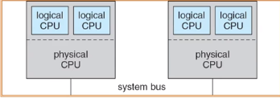

| 创建时间： | 2020/4/6 16:35 |
| 更新时间： | 2020/4/6 16:52 |
| 作者： | lzr |
多处理器调度与优先级翻转
多处理器的cpu调度更复杂
- 多个相同的单处理器组成一个多处理器
- 优点：负载共享
对称多处理器
- 每个处理器运行自己的调度程序
- 需要在调度进程中同步
- 
优先级反转
- 优先级反转的持续时间取决于其他不相关任务的不可预测的行为
- 低优先级任务继承高优先级任务的优先级依赖于他们共享的资源
- 优先级天花板：“资源”的优先级和“所有可以锁定该资源的任务中优先级最高的那个任务”的优先级相同
- 除非优先级高于系统中所有被锁定的资源的优先级上限，否则任务尝试执行临界区的时候会被阻塞
- 只有最高优先级上限信号量锁的任务，会继承被该锁所阻塞的任务的优先级